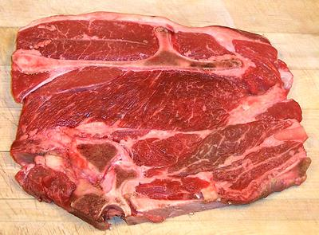

7 Bone Roast / Steak

[Center Cut Pot Roast, Chuck Roast Center Cut]
Named for the slice of shoulder blade bone in the (rough) shape of
the number "7" (top in photo), this is a popular cut for various uses
and easily available in markets around here. The actual configuration of
the bones, and shape of the "7", can vary because several of these are
cut from a shoulder.
Steaks may be cut to 1/2 inch to 3/4 inch, but at 3/4 inch they may
be called "roasts". While definitely a bit tougher than the premium
steaks, they also have more flavor. The photo specimen was 9-1/2
inches by 7-1/2 inches and 3/4 inch thick, weighing 2 pounds.
More on Cuts of Beef.
Cooking:
This cut is often used for "Yankee Pot Roast"
and similar. For those uses it should be at least 3/4 inch thick.
Ok, I confess: when I just want to fry up a hunk of beef, plain and
simple, this is my favorite cut, at between 1/2 and 3/4 inch. Yes, it's
tougher than the premium cuts, but has more flavor, and I keep it quite
rare, so it doesn't have time to toughen up.
ab_7bonez 131028 - www.clovegarden.com
©Andrew Grygus - agryg@clovegarden.com - Photos
on this page not otherwise credited © cg1
- Linking to and non-commercial use of this page permitted